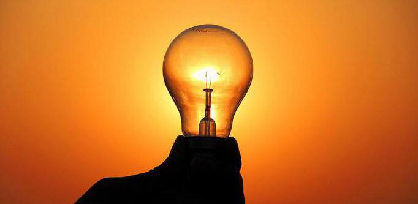

СВІТЛО, у вузькому значенні електромагнітні хвилі в інтервалі частот, що сприймаються людським оком (4,0*1014—7,5*1014 Гц). Довжина хвиль від 760 нм (червоний) до 380 нм (фіолетовий). У широкому значенні те ж, що і оптичне випромінювання.
ДЖЕРЕЛА СВІТЛА - випромінювачі електромагнітної енергії в оптичній частині спектра. Розрізнюють джерела світла природні (Сонце, атмосферні електричні розряди) і штучні, що перетворюють будь-яку енергію в енергію оптичного випромінювання (лампи розжарювання, люмінесцентні лампи, газорозрядний лампи високого тиску і інш.)
СВІТЛОВІ ПРИЛАДИ - пристрої для освітлення, опромінення, світлової сигналізації і світлової проекції. Основні види світлових приладів: світильники, проектори, прожектори, сигнальні лампи, спеціальні лампи (напр., медичні) і т.д
Серед факторів зовнішнього середовища, що впливають на організм людини в процесі праці, світло займає одне з перших місць. Адже відомо, що майже 90% всієї інформації про довкілля людина одержує через органи зору. Під час здійснення будь-якої трудової діяльності втомлюваність очей, в основному, залежить від напруженості процесів, що супроводжують зорове сприйняття. До таких процесів відносяться адаптація, акомодація та конвергенція.
Адаптація — пристосування ока до зміни умов освітлення (рівня освітленості).
Акомодація — пристосування ока до зрозумілого бачення предметів, що знаходяться від нього на неоднаковій відстані за рахунок зміни кривизни кришталика.
Конвергенція — здатність ока при розгляданні близьких предметів займати положення, при якому зорові осі обох очей перетинаються на предметі.